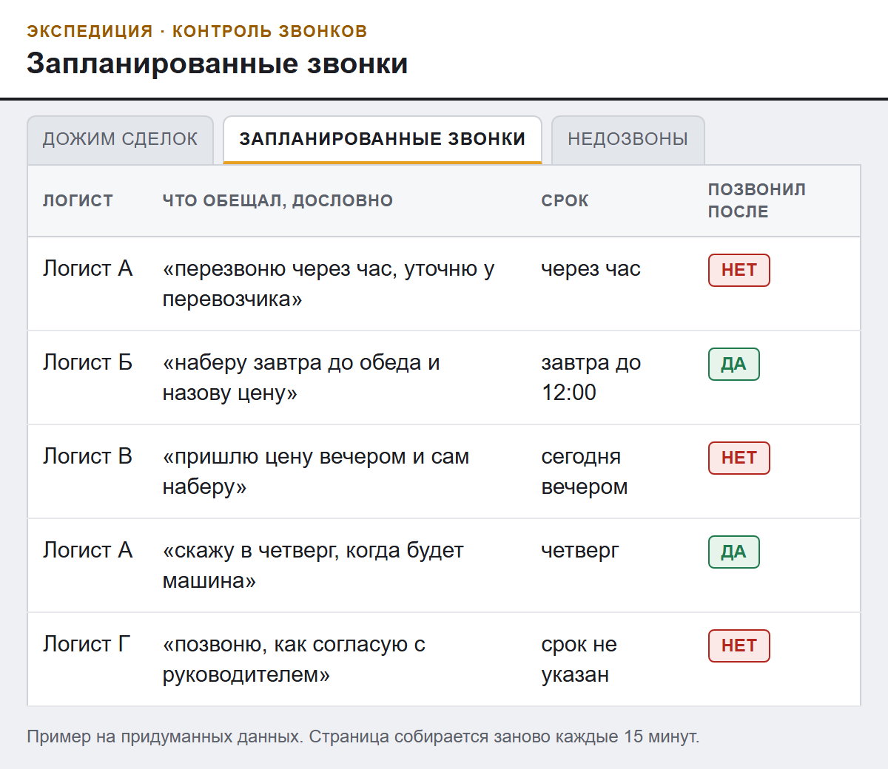
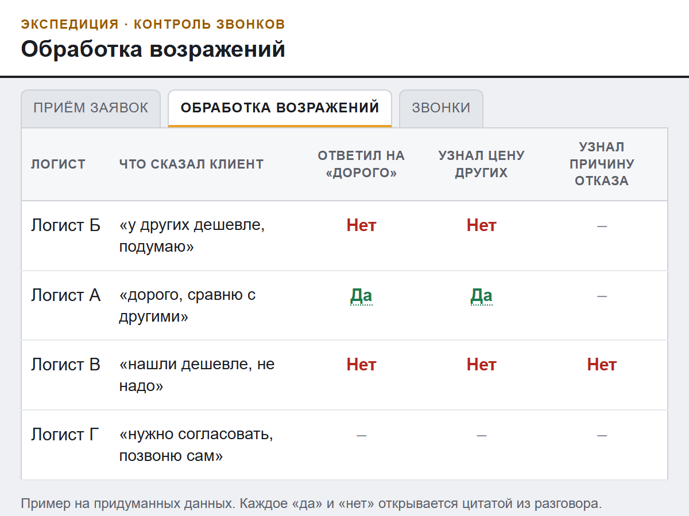

Бесплатный разбор звонков ваших логистов
Кому из клиентов не перезвонили и кто ушёл думать после «дорого», видно по звонкам ваших логистов.
Клиенты логиста бывают только у него в телефоне. Уйдёт логист, уйдут и они. По звонкам видно, с кем он говорит, даже если этих клиентов нет в вашей базе.
Вы присылаете 20 свежих записей и список звонков из личного кабинета АТС. Через два рабочих дня получаете одну страницу с выводами. Логистам ничего не нужно заполнять, записи уже есть в АТС. Для собственника экспедиции, у которого логисты работают из дома и разговоры идут через облачную АТС.
Кто пишет
Алексей Симаков. Каждый день разбираю записи разговоров логистов одной экспедиции. Собираю для директора, кому из клиентов позвонить сегодня и кто из логистов не выполнил обещанное.
Что видит собственник каждый день
Так выглядит страница, которую мы собираем для экспедиции. Она обновляется каждые 15 минут.
Крупные заявки в работе, от суммы, которую задаёте вы. По каждой видно, кто последним говорил с клиентом и что сказано в последнем разговоре.
Все обещания перезвонить: кто обещал, к какому сроку, дословная фраза и был ли звонок после.
Заявки, где последний звонок не дошёл: клиент не взял трубку или разговор оборвался за 10 секунд.
Каждая новая заявка и каждый разговор о цене по вашим пунктам. Ответ «да» или «нет» с цитатой из разговора.
Звонки каждого логиста по дням. Видно, кто в какой день почти не звонил.
Новые заявки от клиентов, которых нет в вашей базе. В строке пометка «нет в Битриксе».
Пункты 1 и 3 работают, если у вас Битрикс24 и у заявки в нём указана сумма (в Битриксе это «сделка»). Пункт 6 работает, если у вас Битрикс24.


Что даст разбор
От получения записей и журнала до одной страницы. Каждый вывод на ней сверен с цитатой из разговора вручную.
Кому не перезвонили. Список клиентов по списку звонков из АТС.
Где клиент сказал «дорого», а вернуть его не пытались. С дословной цитатой из разговора.
Три-пять клиентов, которым стоит позвонить сегодня.
Пример
Экспедиция с удалёнными логистами. Каждый их разговор из облачной АТС сам расшифровывается и разбирается по пунктам собственника. Отработал ли логист «дорого», договорился ли перезвонить, видно на одной странице.
Обслуживание собственник продлевает раз в две недели, пятый период подряд.
Что нужно от вас
- 20 свежих записей разговоров с клиентами по заявкам, не старше 7 дней.
- Список звонков из личного кабинета АТС за 1-2 недели. Без него не видно, кому не перезвонили.
- Выгрузка из CRM, если получится.
- Ваши пункты проверки разговора. Если их нет, берём наши семь.
- Договор или поручение на обработку персональных данных. Подписываем до старта: в записях голоса и номера ваших клиентов.
- Запись, где логист и клиент на разных дорожках (стерео). Проверим на двух записях до начала.
Наши семь пунктов
Пять связаны с тем, поедет ли заявка. Два показывают, почему клиент ушёл. Порядок по ходу разговора.
- Какой груз, вес и габариты.
- Как клиент платит.
- Какую ставку клиент ждёт или какую ему уже назвали другие.
- Что логист ответил на «дорого».
- На какой день назначен следующий звонок.
- Какую ставку и сроки дают другие (если клиент отказался).
- Почему клиент отказался.
Как попросить разбор
Ответьте на моё письмо или выберите, как удобнее.
Если удобнее обсудить голосом, созвонимся на 15 минут.
Что стоит знать до начала
- Разбираются только телефонные разговоры. Переписку в мессенджерах система не читает, цены и договорённости оттуда в разбор не попадут.
- Программа может принять перевозчика за клиента. В строке есть кнопка «П». В разборе я сверяю каждый вывод с цитатой.
- Система работает с записями облачной АТС той экспедиции, с которой мы начинали. Как будет с вашей, покажут две записи.
- Рост продаж и окупаемость не обещаю. У экспедиции из примера мы их не измеряли.
- Денег, которые вы потеряли, в разборе нет. Только факты из звонков и цитаты.
- Разбор бесплатный. Нужен ли следующий шаг, решите после страницы.
Алексей Симаков, ООО «ЗЕВС», ИНН 6372020939
+7 927 600-31-10, Telegram @aleksimakov, aleksey.etrn@yandex.com